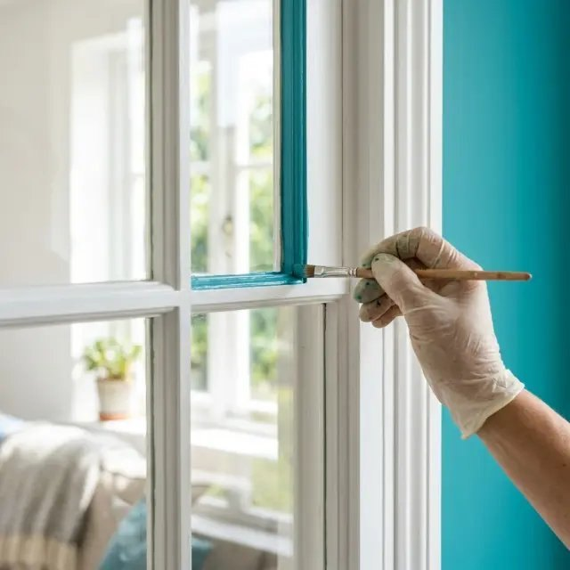
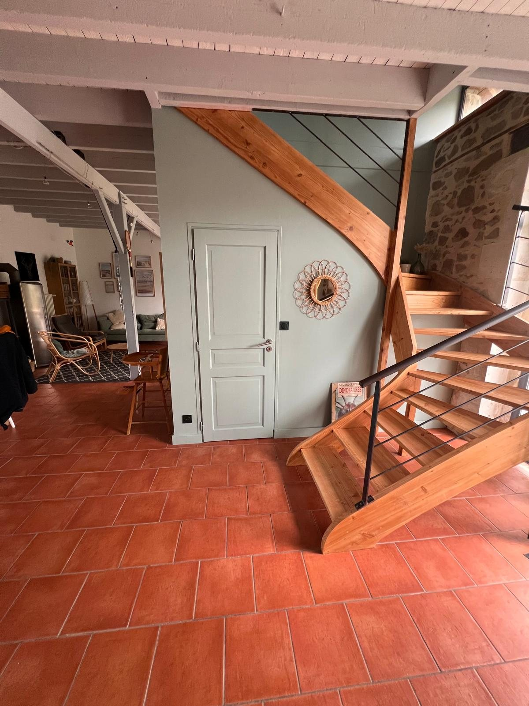
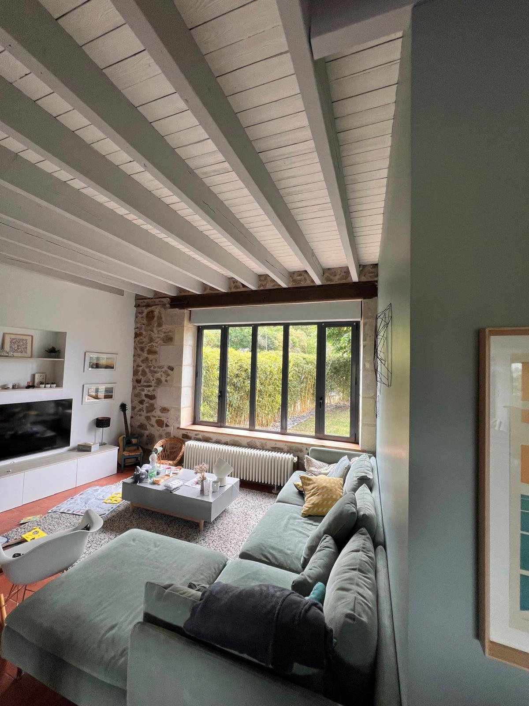
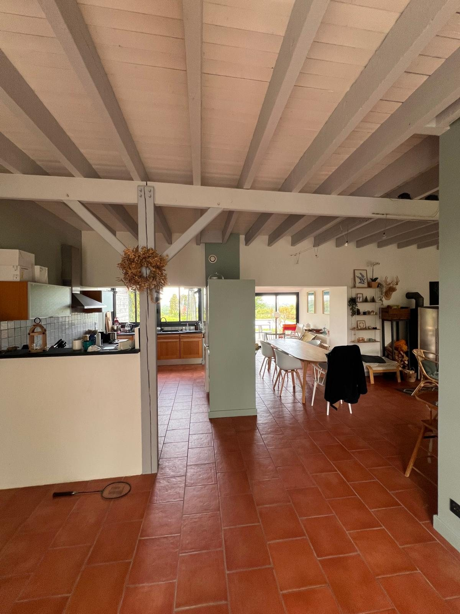

Boiseries & laques,
le détail qui fait la différence.
Portes, fenêtres, escaliers, poutres, moulures et placards : décapage, ponçage et laquage pour des surfaces tendues, lisses et durables.
Basé à Saint-Pierre-Montlimart · Grand Ouest, plus loin sur demande
Boiseries & laques
Une laque tendue, sans trace de pinceau.
Les boiseries sont les éléments les plus sollicités d'une maison. Leur rénovation exige un décapage ou un égrenage minutieux, des produits adaptés au bois et une application sans coulure.
Escalier en chêne, portes anciennes à moulures, poutres à éclaircir ou fenêtres à rafraîchir : nous redonnons de la noblesse au bois, en laque, en lasure ou en vernis.
- Décapage, égrenage et rebouchage du bois
- Laques glycéro ou acryliques haut de gamme
- Escaliers, portes, fenêtres, poutres
- Finitions satinées ou brillantes tendues

Prestations
Ce que nous réalisons.
Chaque chantier est unique : nous adaptons nos techniques et nos produits à votre support, à votre usage et à votre budget.
Escaliers
Rénovation des marches, contremarches et rampes, en laque ou vernis résistant.
Portes & placards
Laquage des portes intérieures, moulures et façades de placards.
Poutres & lambris
Éclaircissement et mise en peinture pour moderniser un plafond.
Fenêtres & volets bois
Protection et embellissement des menuiseries exposées.
Moulures & plinthes
Reprise des détails décoratifs pour une finition d'exception.
Vernis & lasures
Mise en valeur du bois naturel avec une protection durable.
Notre méthode
Un chantier maîtrisé, de la visite à la réception.
Visite & écoute
Rendez-vous sur place pour comprendre votre projet, relever les surfaces et diagnostiquer les supports.
Devis détaillé
Un chiffrage clair, poste par poste. Aucun frais caché.
Réalisation
Protection, préparation puis mise en peinture, dans le respect du planning convenu.
Réception
Visite finale ensemble, retouches si besoin, et chantier rendu propre.
Réalisations
Nos chantiers, en vrai.
Quelques intérieurs rénovés par ALG Peinture.


Secteur d'intervention
Basé à Saint-Pierre-Montlimart, dans tout le Grand Ouest.
Notre atelier est à Saint-Pierre-Montlimart, mais nous nous déplaçons dans tout le Grand Ouest pour vos travaux de boiseries & laques : Cholet, Nantes, Angers, Ancenis, La Roche-sur-Yon, Rennes… et plus loin sur demande.
Au-delà du Grand Ouest, nous nous déplaçons sur demande : maison de famille, résidence secondaire ou local professionnel. Parlons-en, le devis reste gratuit.
Questions fréquentes
Vous vous demandez…
Une autre question ? Appelez Gad directement au 07 68 78 92 58.
Peut-on repeindre un escalier vernis ?
Oui, après un égrenage et une sous-couche d'accroche adaptée. Nous utilisons des laques spéciales sols et escaliers résistantes au passage.
Faut-il décaper entièrement une porte ancienne ?
Pas toujours. Si les couches existantes sont saines, un égrenage suffit ; sinon nous décapons pour retrouver un support propre.
Combien de temps sèche une laque ?
Une laque acrylique est sèche au toucher en quelques heures, mais il faut compter plusieurs jours pour sa dureté complète.
Vous déplacez-vous hors Maine-et-Loire ?
Oui, nous intervenons dans tout le Grand Ouest depuis notre base de Saint-Pierre-Montlimart.
Autres savoir-faire
Découvrez aussi nos expertises.
Devis gratuit
Parlons de votre projet.
Décrivez-nous vos travaux : où que vous soyez dans le Grand Ouest, nous vous recontactons rapidement pour convenir d'une visite et vous remettre un devis détaillé.
- Tél07 68 78 92 58
- Emaila.l.g-peinture@hotmail.com
- Siège
49110 Saint-Pierre-Montlimart
- Secteur
Grand Ouest · plus loin sur demande
- Horaires
Lun – Ven · 8h – 18h30